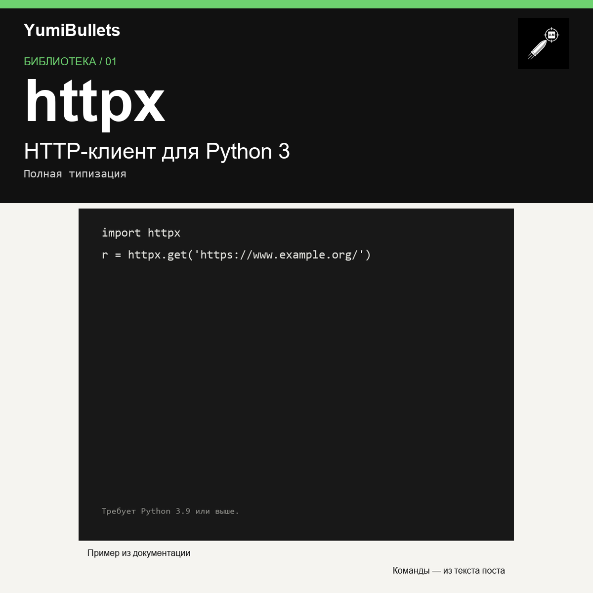

HTTP-запросы с проверкой статуса через HTTPX
Для HTTP-запросов в Python-скриптах нужно получить ответ сервера и проверить его статус, заголовки и содержимое. HTTPX предоставляет синхронный и асинхронный интерфейс с API,…

Для HTTP-запросов в Python-скриптах нужно получить ответ сервера и проверить его статус, заголовки и содержимое. HTTPX предоставляет синхронный и асинхронный интерфейс с API,…